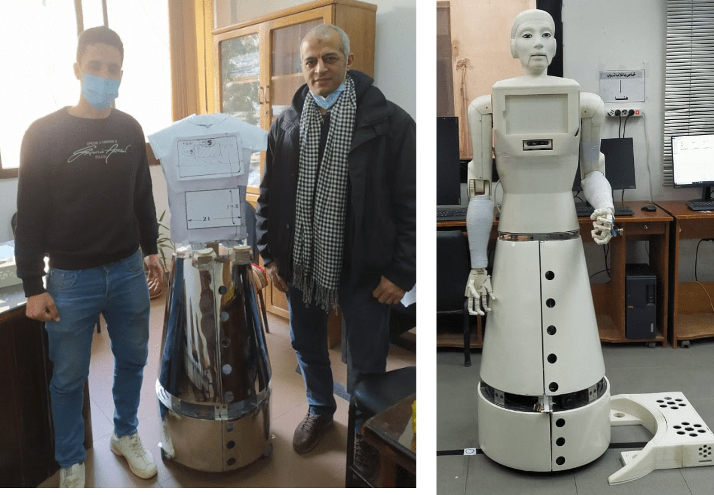

Micro Jet Engine Design and Analysis
Funded by: Egyptian Academy of Scientific Research and Technology
Abstract
This research investigates the design, aerodynamic optimization, and structural analysis of a micro jet engine. The study aims to develop a compact, high-performance propulsion system using computational tools and experimental validation.

Project Overview
This project focuses on the design and performance analysis of a micro jet engine, covering key aspects such as:
- Component selection
- Aerodynamic design
- Structural analysis
- Simulation validation
The goal is to develop an efficient and cost-effective engine by leveraging computational tools and industry-standard methodologies.
1. Design and Selection Steps
Each component of the engine was carefully designed and selected based on performance requirements, cost-effectiveness, and manufacturability. Key software tools used for design verification and optimization:
- CF-Turbo
- Ansys
- MATLAB
1.1 Compressor Design
- A turbocharger compressor impeller from a BorgWarner diesel engine was selected for cost efficiency and high surface quality.
- Key design parameters analyzed:
- Blade angles
- Diameter
- Performance maps
- CF-Turbo software was used for:
- Velocity triangle simulations
- Mean line calculations
- Beta-angle distributions
1.2 Turbine Design
- A small-scale axial turbine was designed using CF-Turbo 2020 R2.3 for mean-line modeling.
- Detailed aerodynamic analysis was performed on nozzle and rotor blades, covering:
- Flow coefficient
- Loading coefficient
- Reaction degree calculations
- The design was compared with experimental data from Shapiro et al. (1957) for efficiency estimation.
- Final turbine blade count:
- Rotor - 10 blades
- Stator - 13 blades
2. Simulation and Structural Analysis
To validate the performance and durability of the designed micro jet engine, computational simulations were performed using:
- Ansys
- CF-Turbo
2.1 Steady-State Stress Analysis (Ansys Static Structural)
- Mesh generation: A fine mesh was created for accurate results.
- Boundary conditions:
- Rotational speed: 90,000 rpm
- Applied pressure: 0.1 MPa on blade face and leading edge
- Operating temperature: 650°C
- Results:
- Max von Mises stress: 349.2 MPa (at blade root) – within acceptable limits.
- Max radial deformation: 0.3379 mm at blade tip, leading to an estimated 0.43 mm gap between the turbine cylinder and rotor after deformation.
2.2 Modal Analysis and Critical Speed Prediction
- Modal analysis was conducted to determine the natural frequencies of the turbine and identify potential resonance conditions.
- Campbell diagram analysis was performed to evaluate critical speeds and ensure safe operation up to 120,000 rpm.
- Mode shapes analysis was used to visualize structural deformations under different vibrational modes.
3. Aerodynamic and Flow Simulation (CFD & MATLAB)
To validate the airflow and thermal behavior, Computational Fluid Dynamics (CFD) simulations were performed.
3.1 CFD Simulation (ANSYS Fluent)
- A 3D model of the compressor and turbine was simulated using ANSYS Fluent.
- Turbulence modeling: k-ω SST model was used for accurate flow predictions.
- Key results:
- Pressure distribution, velocity profiles, and temperature variations were analyzed.
- Compressor efficiency: Predicted performance matched the estimated values from turbocharger catalogs.
- Turbine efficiency: Estimated at 72.5%, in agreement with theoretical calculations.
3.2 MATLAB Simulation for Cycle Performance
- A thermodynamic Brayton cycle simulation was conducted in MATLAB to evaluate:
- Specific thrust and thermal efficiency under different operating conditions.
- Impact of ambient temperature and pressure variations on performance.
- Fuel consumption estimation for different flight altitudes.
HEV Modelling in Matlab-Simulink Environment and Control Strategy Design
Abstract
The objective of this paper is to develop a functional model of a Hybrid Electric Vehicle (HEV) architecture in SIMULINK, which provides a streamlined approach for multi-domain simulation. The selected architecture is a P2 Parallel Hybrid vehicle. The paper adopts a “gradual complexity” approach, initially constructing models for a Battery Electric Vehicle (BEV) and a Conventional Vehicle (CV). These initial models facilitate the development of a third HEV model by reusing compatible components and control strategies, ensuring consistency and efficiency in model design.

Keywords
Hybrid electric vehicle (HEV), backstepping sliding mode control, fuel cell (FC), ultra-capacitor (UC).
Introduction
Simulation and modeling in engineering are essential tools, particularly within the automotive powertrain sector, where real-world vehicle testing is costly and time-intensive. Computer-based vehicle models enable efficient analysis of underlying system behavior, reducing costs and expediting the testing process.
The System
A. FTP75 (2474 seconds, cycle)
The FTP-75 (Federal Test Procedure 75) is a standardized driving cycle primarily used in the U.S. to evaluate the performance of passenger cars in urban driving conditions. It simulates typical city driving patterns, characterized by frequent stops, accelerations, and decelerations at relatively low speeds.
B. Environment
The Environment block in Simulink plays a crucial role in simulating external conditions that impact a vehicle's performance, such as temperature, altitude, humidity, wind, and road conditions.
C. Longitudinal Driver
The Longitudinal Driver block in Simulink models the driver’s role in controlling a vehicle’s forward and backward motion by managing throttle and braking inputs.
D. Controller
In vehicle simulation models, controllers manage the vehicle's dynamic behavior, particularly in controlling speed, acceleration, and braking using strategies like PID and Model Predictive Control (MPC).
E. The Passenger Car
The Passenger Car block in Simulink simulates the behavior and dynamics of Hybrid Electric Vehicles (HEVs), integrating internal combustion engines (ICE) and electric motors within the powertrain.
F. Visualization
In the HEV P02 model in MATLAB/Simulink, visualization of key parameters such as Battery Current, SOC, Fuel Economy, Speed, and Torque is crucial for evaluating the hybrid vehicle's performance.
3. Humanoid Shams Robot
Funded by: Ain Shams University
Project Overview
Designed and manufactured a humanoid robot for nursing duties at Ain Shams Specialist Hospital. Responsibilities included mechanical design, motor specification calculations, and overseeing 3D-printed components.
Relevance
Applicable to robotics, mechatronics, and manufacturing.
Skills Demonstrated
Mechanical design, prototyping, and system integration.
Desert Reclamation Systems
Project Overview
Designed a pumping station, permanent magnet generator, and aluminum vice for agricultural development in West-West Minya, Egypt.
Relevance
Applicable to fluid mechanics, energy systems, and mechanical design.
Skills Demonstrated
System design, material selection, and project execution.
Permanent Magnet Generator (PMG)
Developed a Permanent Magnet Generator (PMG) for energy conversion, focusing on sustainable power generation. Key aspects included:
- Electromagnetic design: Optimized rotor-stator configuration for maximum efficiency.
- Material selection: Ensured high-performance magnets and core materials for improved durability and power output.
Project: Aluminum Vice
Designed and fabricated an aluminum vice as a precision work-holding tool for machining applications. Project highlights:
- Mechanical design and stress analysis: Ensured optimal clamping force and durability.
- Material selection: Used aluminum for lightweight and corrosion-resistant properties.
- Manufacturing process: Employed CNC machining and manual finishing for high accuracy.